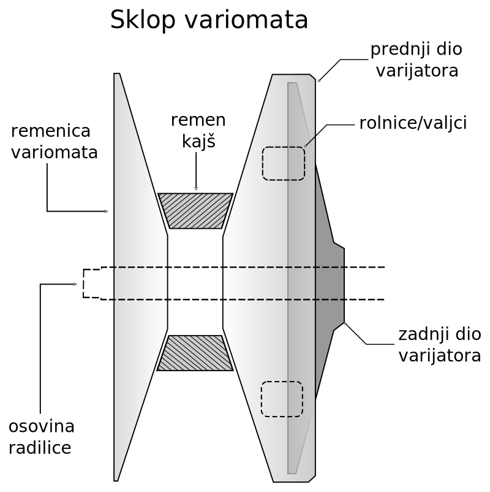
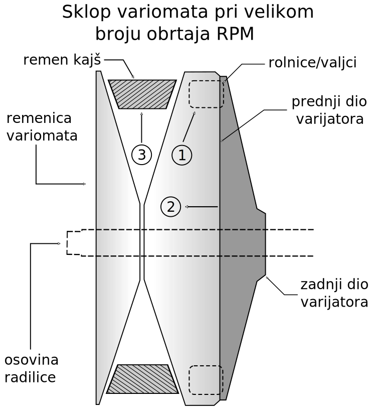
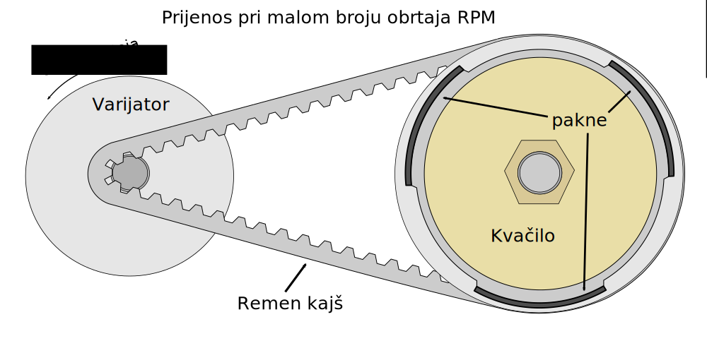
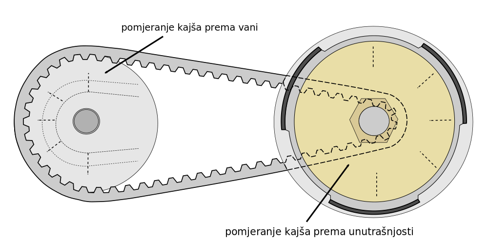
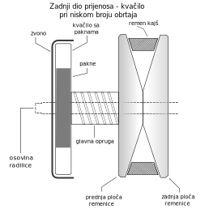

Home
Home Kontakt
Kontakt
Da biste razumjeli kako funkcionira prijenosni mehanizam skutera i rad s utezima i oprugama, prvo morate shvatiti kako funkcionira čitav pogonski sistem.
Počnimo s prednjim dijelom prijenosa, tkv. variomatom. Variomat se sastoji od od dvije cjeline, sklopa u kojem se nalaze rolnice/utezi i klizači koji se zove Varijator i remenice variomata. Varijator je sastavljen od posude sa rolnicama i klizne ploče na kojoj se nalaze plastični klizači. Remenica variomata je vanjska ploca koja se direktno priteže maticom na radilicu mašine, nazubljenja je kod mašina 50/100/12/150cc, dok kod mašina >200cc nema nazubljenje krajeve.

Kako se broj obrtaja motora povećava, centrifugalna sila istiskuje težinu valjak/rolnica prema vani (broj 1 na slici).
Težine valjka guraju se na površinu kutnih ploča. Zbog toga se prva polovica varijatora pomiče prema prednjoj polovici remenici variomata (broj 2 na slici).
Kako se prva polovica varijatora približava prednjoj remenici variomata, ona gura remen kajš, koji se inače u konusu, prema vanjskom prostoru. (Broj 3 na slici).

Što se tiče različitih utega za valjke, stvar je prilično jednostavno. Što je veća težina rolnica/utega, to će se više sile primijeniti na ploču varijatora koja brže tjera elemente variomata. Ako su težine valjka prevelike, prebrzo će se prebaciti zupčanik u brzinu.
Ako su vam rolnica/valjci previše lagane, tada neće biti dovoljno sile da se ploča varijatora izbaci van, a pomjeranje remen kajša prema vani je sporo. To će rezultirati dobrim ubrzanjem, ali niskim gornjim ubrzanjem.
Na sljedećoj slici je prikazan princip rada prijenosa sa variomatom, remen kajšom i zadnjim kvačilom zadnjeg pogonskog točka.

Na slici 2 je prikazano stanje prijenosa kada mašina dosegne određeni broj obrtaja. Što se povečava broj obrtaja(dodaje se gas na ručici), težine rolnica se usljed centrifugalne sile guraju prema vani, varijator se pokreće naprijed i potjera konusni remen kajš prema vani. Remen kajš se pomjera ka vajskoj granici varimata, kao na slici, a usljed te sile se na zadnjem kvačilu remen kajš upušta prema unutrašnjem dijelu kvačila.

Sada da objasnimo princip rada zadnjeg dijela prijenosa, kvačila. Zadni dio prijenosa se sastoji od sklopa sa oprugom koja ga drži skupa na koje se nalaze pakne i vanjskog dijela koji se zove zvono.
Prednja polovica remenice također se kontrolira okretnim momentom. Postoje uglati žljebovi po kojima se kreće ploča. Kako se primjenjuje zakretni moment, to ograničava kretanje remena. Dok se na prednje dijelu prijenosa remen kajš podiže oko variomata, a zakretni moment se primjenjuje, na zadnjeg kvačilu se remen kajš upušta između ploča koje se uz pomoć opruge pomjeraju prema vani time dopuštajući remenu da se spusti unutar.
Ovako izgleda stražnji remen na kvačilu pri malim brojevima okretaja:

Ovako izgleda stražnja remenica kvačila pri velikim okretajima: